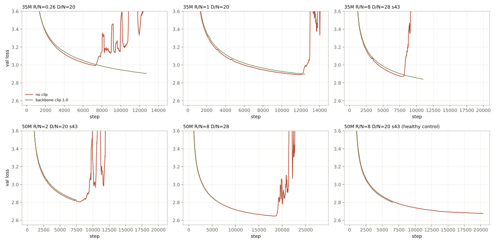
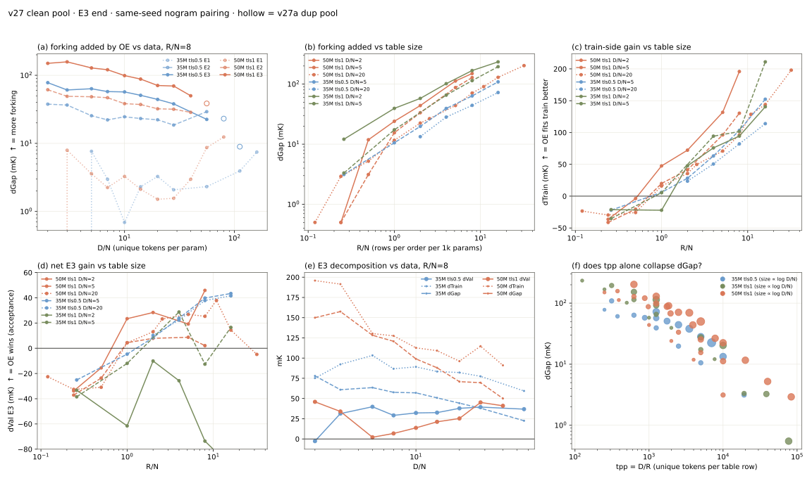
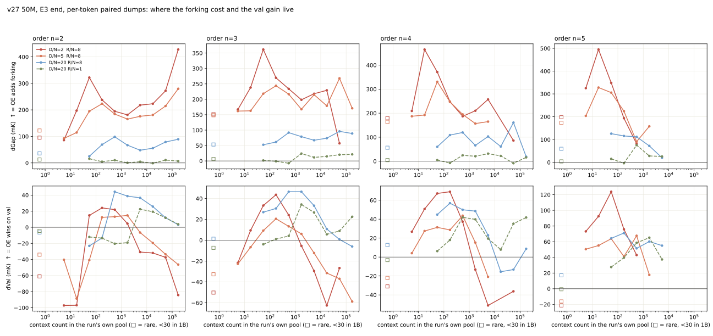
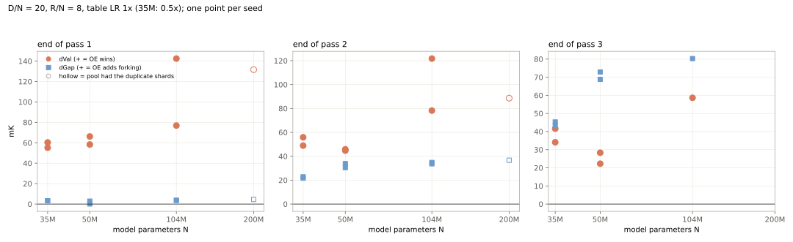
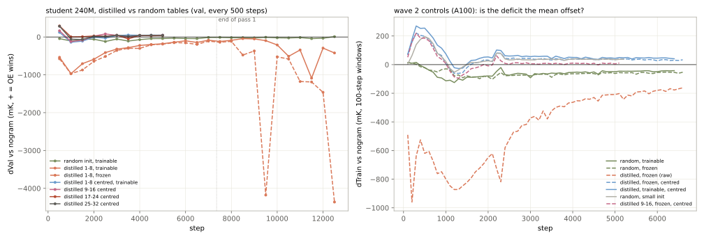

夜间读数：表大小有明确最优点，OE 收益随模型变大而增长
训练池里三片重复数据已剔除。表大小的最优点找到了：50M 模型在 R/N≈8–11 时净收益最大，表再大就因 forking 代价反转为负。主干网络梯度裁剪救回了 7 个发散配置中的 6 个，且不损失收益。数据量取模型参数的 20 倍时，第 3 遍末的净收益从 50M 模型的 +25 mK（千分之一 nat）升到 104M 的 +59 mK：大模型从表里多拿的训练收益涨得比 forking 代价快。重复集中在小子集时，OE 收益保持在 +55~+80 mK。蒸馏表去掉均值偏置后，冻结状态下比同幅度随机表好 120–140 mK。
- 模型 nanoGPT 35–200M · 学生 240M
- 数据 7.0B token 干净池
- 协议 E3：同一批数据训练 3 遍，第 3 遍末读数
- 口径 同 seed 与无表基线配对
- 2026-10-23 凌晨
四条支线：scaling 与蒸馏两条今晚各出一个判决
名词：OE 指把 n-gram（n=2~5）查表结果加到模型输入嵌入上的结构，每阶一张表。forking 指重复训练时训练 loss 继续下降而验证 loss 停滞或回升。gap 等于同一 step 的验证 loss 减训练 loss。ΔVal 是 OE 相对无表基线的验证集收益，正数表示 OE 更好，它是验收标准。ΔVal 恒等于 Δtrain（训练 loss 压低多少）减 Δgap（gap 比基线多多少，即 OE 额外带来的 forking）。单位 mK 等于 0.001 nat。N 是模型参数量，D 是不重复训练 token 数，R 是每阶表的行数。D/N 是每个参数分到的 token 数；R/N 按每千个参数对应的表行数计，R/N=8 即 50M 模型每阶 40 万行。
训练池里三片数据是另一片的原样拷贝，已剔除
9 个注入臂的发散起点都挤在第 16,500–16,770 步，跨越 35M 到 200M 和不同表大小。这一窗口里无表基线的训练 loss 同样骤降约 0.3 nat。逐片比对 32-token 片段哈希后发现：第 60、62、63 片的采样片段 100% 与第 1 片相同，其余 144 片都不超过 2%。凡训练池超过 2.385B token 的配置，都在第一遍中段把第 1 片原样再学一遍。三片已从清单移除，14 个受影响的臂已停，重跑带 _p27b 标签。2.385B 以下的所有读数不受影响。
裁剪主干梯度救回了 7 个发散配置中的 6 个，收益不受损
剔除重复片之后仍有 11 个真发散臂，分布在不同的表大小与数据量上，无表基线一个都没有。原配方只裁剪表的梯度。新增一个默认关闭的主干梯度范数裁剪（阈值 1.0），原样复跑 5 个发散臂：其中 3 个已越过原发散点，验证 loss 平滑下降，另 2 个尚未到达。健康对照在同一时刻的验证 loss 没有变差。

第 3 遍末与同样裁剪的无表基线配对：原先发散的 35M D/N=28 配置净收益 +44 mK。50M D/N=40 的一个 seed 裁剪后仍在第 2 遍发散，发散前后表的幅度与健康 seed 完全一致，所以剩余发散的根因不在表的幅度，候选是主干注意力 logit 增长。健康对照 50M 裁剪后 +28，未裁剪 +22，在 seed 噪声内。裁剪不改变小表有害（R/N=0.26 时 −27 mK），说明小表的伤害与发散无关。建议下一代配方默认开启主干梯度裁剪（需要新起一族 run，待拍板）。
forking 代价主要由表大小决定，数据量只能缓解一部分
在 35M 与 50M 两档上把表大小 R/N 与数据量 D/N 交叉扫描。代价项 Δgap 可以写成 A·(R/N)a·(D/N)b，三组拟合的 a 在 0.85–1.04，b 在 −0.30 到 −0.60。若代价只取决于每行分到的 token 数 D/R，应有 a=−b。实测 |a| 明显大于 |b|，所以每行 token 数不是充分变量：表加倍时代价几乎加倍，数据加倍只把代价压低 20–35%。

| 档 | Δgap 拟合 | 点数 |
|---|---|---|
| 50M，表学习率 1 倍 | 25·(R/N)1.04·(D/N)−0.34 | 19 |
| 35M，表学习率 0.5 倍 | 17·(R/N)0.85·(D/N)−0.30 | 17 |
| 35M，表学习率 1 倍 | 46·(R/N)0.86·(D/N)−0.60 | 13 |
同一位置上表学习率减半，代价约缩小为 1/2.7，所以表学习率是第三个独立的调节量。沿数据量单轴看，幂律和指数拟合得一样好，都不支持存在一个降不下去的代价下限。此前口头汇报的 Δgap∝(D/N)−0.5 用的是包含发散点的末点口径，以本节为准。
净收益存在明确的最优表大小。50M、D/N=20 时：R/N≤0.5 有害（−23 到 −33 mK），R/N=1 持平，2.56–10.9 逐步升到 +38，R/N=16 降到 +14，R/N=32 变为 −5。训练收益 Δtrain 约按 (R/N)0.5 增长，代价 Δgap 约按 (R/N)0.9 增长，两者在 R/N≈8–11 交出峰值。最优点随数据量右移：D/N=5 时各种表大小都只有 −1 到 +14，D/N=10 时最优在 R/N≈5（+18）。此前的「R/N≈5 最优」已撤回。
| R/N（50M，D/N=20） | Δtrain | Δgap | ΔVal |
|---|---|---|---|
| 0.24 | −30 | +3 | −33 |
| 1 | +16 | +12 | +4 |
| 2.56 | +50 | +27 | +23 |
| 8 | +96 | +71 | +25 |
| 10.9 | +129 | +91 | +38 |
| 16 | +144 | +130 | +14 |
| 32 | +198 | +203 | −5 |
R/N=8 为两 seed 均值，其余单 seed。R/N=16、32 在 H200 上训练，暂与 A100 上的无表基线配对。
forking 不集中在低频 context，没有被表覆盖的位置也在 fork
用第 3 遍末逐 token 的 loss 记录，按 context 在训练池中的出现次数分组，再按该位置最深被哪一阶的表覆盖分组。数据量充足（D/N=20）时，四阶的代价在出现 100 次到 10 万次之间大致持平，没有越稀有越 fork 的幂律。数据量小时代价整体抬高，峰值落在出现 10–100 次的 context 上。

| D/N=20，R/N=8：最深覆盖阶 | 位置占比 | ΔVal | Δgap |
|---|---|---|---|
| 无任何表覆盖 | 15% | −25 | +35 |
| 2 阶 | 46% | +21 | +58 |
| 3 阶 | 23% | +34 | +66 |
| 4 阶 | 9% | +39 | +101 |
| 5 阶 | 7% | +61 | +130 |
覆盖越深，收益越大，代价也越大。没有任何表覆盖的位置，gap 也比基线大 35 mK，验证集变差。这部分代价不在表行上，而在主干网络：表接管了局部条件后，主干在其他位置也更依赖训练集。由此可以推出，按频率屏蔽表行只能削掉表行上的代价，碰不到这 15% 位置上的外溢，这与此前「低频 mask 在 n=2~5 联合下不管用」的观察一致。可检验的分工：主干侧手段（裁剪、正则）应主要压低无覆盖位置的代价，表侧 gate 应主要压低 4–5 阶的代价。
模型变大时，训练收益涨得比 forking 代价快，第 3 遍末净收益随之增长
固定 D/N=20、R/N=8，只改模型大小。第 3 遍末，104M 的净收益 +59 mK，高于 50M 的 +22~28。拆开看，代价 Δgap 从 50M 的约 71 只涨到 104M 的 80，训练收益 Δtrain 从约 96 涨到 139。104M 目前只有一个 seed，第二个 seed（第一遍末 +142，方差很大）下午到。200M 的池含重复片，干净重跑已排队。此前「等比放大收益变薄」的判断来自旧的泄漏池数字，作废。

重复集中在小子集时，OE 的收益保持在 +55~+80 mK，且比无表基线稳定得多
更接近生产的形态：总训练量固定 1B token，只在最后一段把一个小子集重复 P 遍，其余数据只见一遍。两个 seed、8 种重复强度共 12 对读数里，OE 的验证 loss 都落在 2.79–2.81 之间。无表基线在 2.857–2.952 之间波动，其中两次明显变差（3%×3 的 seed 42、10%×8 的 seed 43），所以这两格的 ΔVal 偏高。不算这两格，净收益 +53~+82 mK，中位数约 +68，与完全不重复时（seed 42 +57、seed 43 +65）相当或略高。凌晨「重复越重 OE 越保护验证集」的初读来自单个 seed 的最重一档，第二个 seed 没有复现，已撤回。OE 在重复子集上的 loss 始终比基线低得多，记忆进了表，但验证集没有因此变差。
| 子集占比 × 重复次数 | ΔVal seed 42 | ΔVal seed 43 |
|---|---|---|
| 不重复（1B 只见一遍） | +57 | +65 |
| 1% × 4 | +68 | +82 |
| 3% × 3 | +157 | +80 |
| 10% × 2 | — | +53 |
| 10% × 4 | +61 | +74 |
| 10% × 8 | +70 | +129 |
| 30% × 3 | — | +75 |
蒸馏表的落后来自每阶共有的均值，去均值后的内容比随机表好 120–140 mK
蒸馏表用 Qwen3.5-4B 的残差在 10B token 上聚类得到，每阶 250 万行、64 维，经一个零初始化的投影加到学生模型输入上。原始蒸馏值在第 1000 步落后无表基线约 970 mK，此后缓慢追近，同等幅度的随机表几乎不落后。原始值里有一个每阶共有的均值方向，占能量约 40%。减去这个均值并缩放回原幅度后，第 500 步领先基线 +120 mK（第 1–8 层视图）到 +290 mK（第 25–32 层视图），但到第 1000 步回落到 −140 至 +3 mK。同一时刻原始蒸馏值落后 −970 mK。去均值消除了绝大部分落后，深层视图最好。

最干净的对照是两张都冻结、幅度相同的表：第 2000–3000 步，去均值蒸馏表领先无表基线 +29~+50 mK，随机表落后 −88~−103 mK，差约 +120~+140 mK，这是蒸馏内容本身的贡献。可训练时，去均值蒸馏表 +37~+57，小幅随机初始化 +22。第 500 步的大幅领先主要是初始化尺度效应，小幅随机表同样有 +200。
在飞队列：62 张卡全满，上午到中午陆续出数
| 机群 | 内容 | 预计 |
|---|---|---|
| A100 ×30 | 二维面补点（D/N 2–40 × R/N 0.25–16）、梯度裁剪检验与追加、重复片重跑、子集重复的生产形态 | 快的组 06:00 前，慢的组中午 |
| A100 ×8 | 蒸馏对照组 8 臂 | 第一遍末 ~10:30 |
| 360-2 H200 ×8 | 104M/200M 的 D/N 与 R 点、大表点 | 上午到傍晚 |
| ophis H200 ×8 | 104M 表大小扫描（R/N 1/2/3.85/8）+ 第二 seed + D/N=40 重跑 | 上午 ~09:30 |
| 蒸馏机 ×8 | 无表基线、原始蒸馏与随机对照 4 臂 + 去均值层视图 4 臂 | 第一遍末 ~06:30，第 3 遍末明晚 |